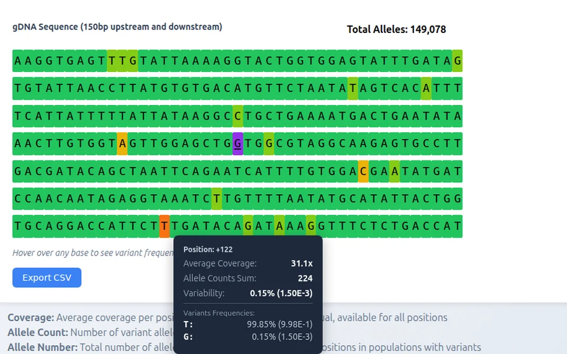
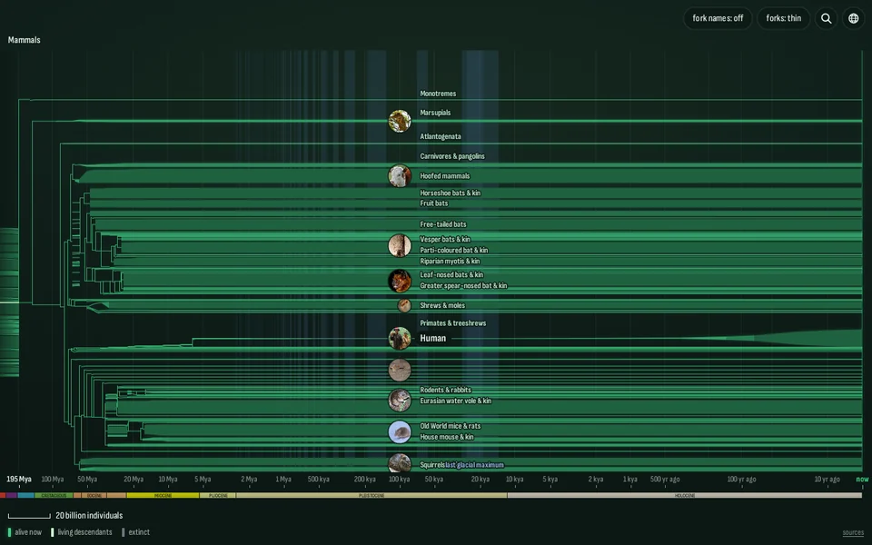
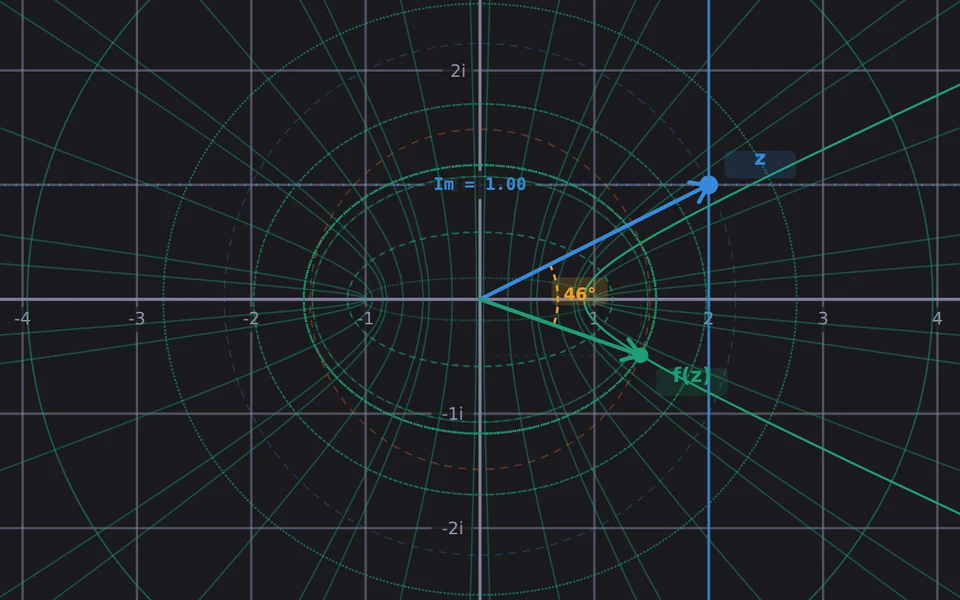
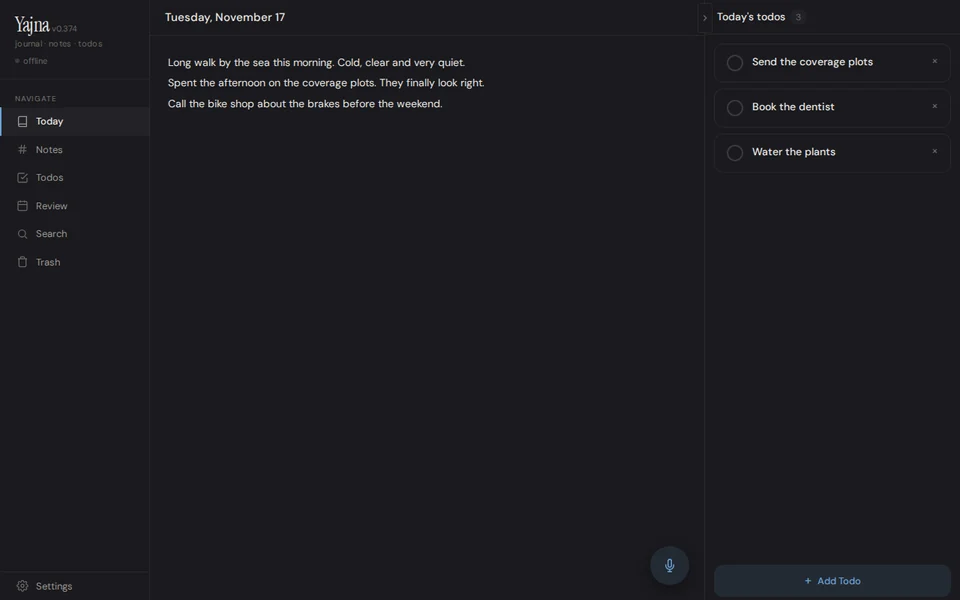
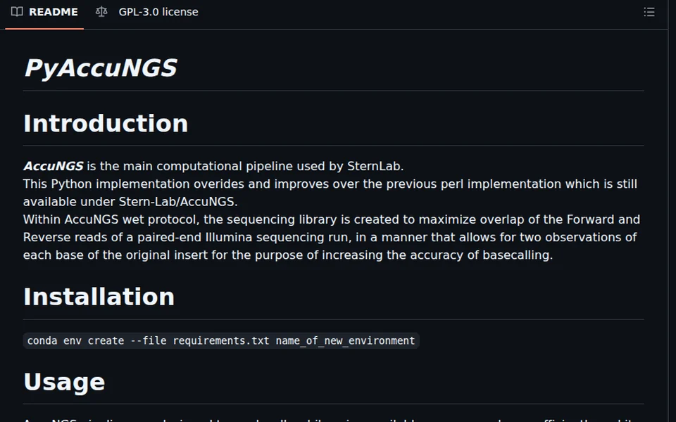

-

Genomic Mutation Viewer
Shows the DNA around well-known cancer mutations, coloured by how variable each base is across 9 gnomAD populations.
Watch the demo video -

WeatherBaseline
How unusual a day's weather really is, ranked against every version of that day since 1950 in ERA5 reanalysis data.
weatherbaseline.com -

ToLaD
The tree of life as a spindle diagram, where each branch's width is that population's size through time.
theitush.github.io/ToLaD -

Giverny, manager fork
Adds a manager to the Giverny terminal. It runs Claude Code worker agents in parallel, with time estimates that learn from history and a shared RAM budget.
github.com/theitush/givernyFork of y0av/giverny
-

Complex Explorer
Type a complex function like z², eᶻ or sin(z) and see how it bends the grid of the plane and where it sends a point you drag, in Cartesian or polar coordinates.
theitush.github.io/complex-explorer -

Yajna
A local first journaling and notes app that can sync through your Google Drive.
theitush.github.io/yajna -

AccuNGS, Stern Lab pipeline
A Python fork of the Stern Lab's AccuNGS pipeline for accurate variant calling from NGS data, built on overlapping paired-end reads so each base is read twice.
github.com/Stern-Lab/PyAccuNGS